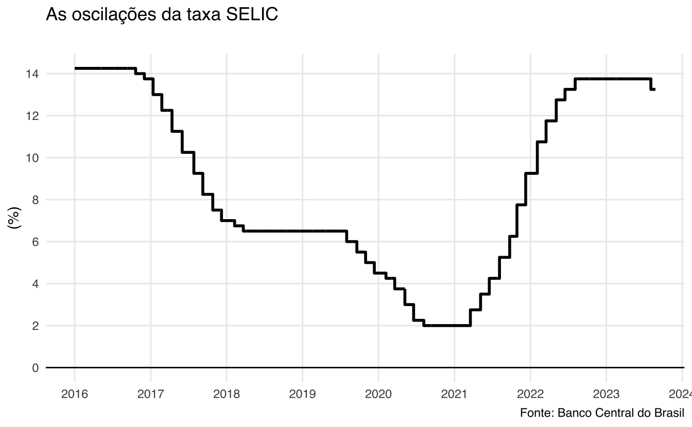
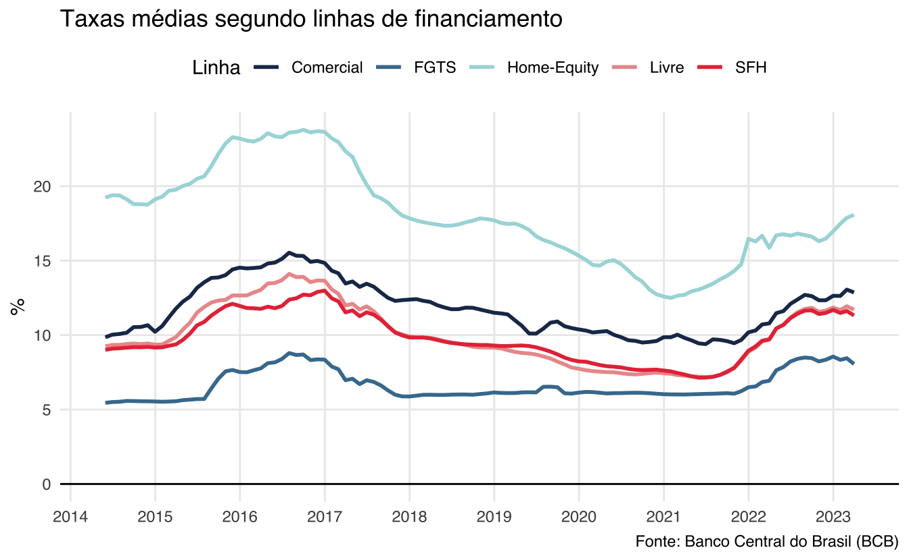
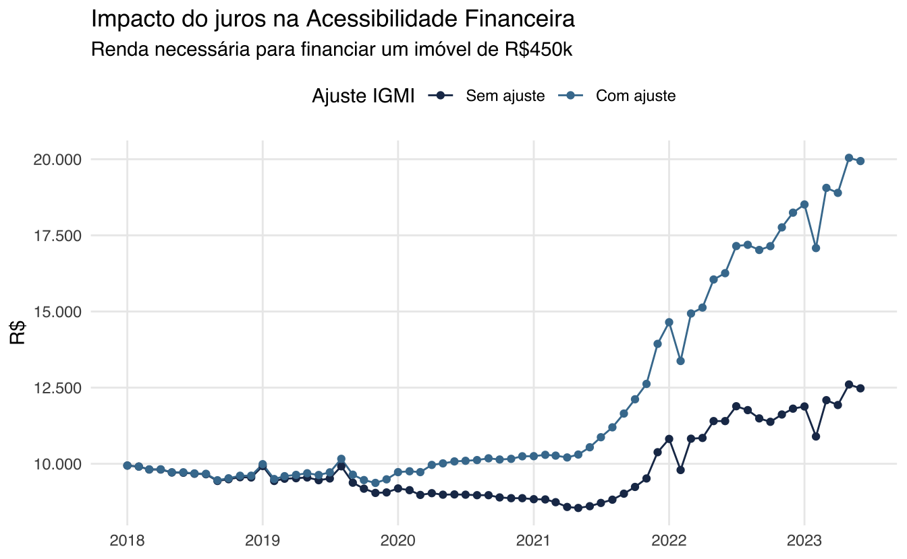

Juros e financiamento imobiliário
A taxa de juros é talvez a variável macroeconômica mais importante para se observar quando se pensa em financiamento imobiliário. Quanto maior for a taxa de juros, mais “caro” fica o financiamento habitacional. Ou seja, mais difícil fica de comprar um imóvel.
O financiamento imobiliário nada mais é do que um empréstimo que uma família contrai com o sistema financeiro (um banco); este empréstimo é uma dívida que a família deve repagar em parcelas mensais e sobre cada pagamento incide um valor de juros.
Um pouco sobre juros
A taxa de juros tem um efeito geral sobre a economia, mas o seu efeito é mais notável para o consumidor na hora de fazer compras grandes, de longo prazo: caso de um automóvel ou de um imóvel. Uma taxa menor significa que fica mais “barato” tomar crédito, enquanto uma taxa maior significa o contrário.
Quem define a taxa de juros “geral” da economia, a taxa SELIC, é o Cômite de Política Monetária (COPOM). A SELIC é, na verdade, uma meta de taxa de juros, que o Banco Central do Brasil (BCB) deve perseguir. O COPOM se reúne periodicamente para definir a taxa SELIC; na ocasião mais recente, no início de agosto, decidiu-se reduzir a taxa de 13,75% a.a. para 13,25% a.a. - a primeira queda depois de um ciclo de alta de 3 anos.
Tipicamente, a taxa de juros é a ferramenta de política monetária que se usa para controlar a inflação: quando a taxa de inflação aumenta muito, o COPOM decide aumentar a taxa de juros. Foi isto o que aconteceu em 2014-16 e também em 2021-23.
O gráfico acima mostra as oscilações recentes da SELIC. No final de 2016 encerrou-se um longo ciclo de alta que começou em reação à escalada da inflação em 2014. A taxa, então, chegou a cair até 2% a.a. no final de 2020, acompanhando a tendência internacional de taxas de juros baixíssimas, muito próximas de 0% a.a. A volta da inflação com a pandemia levou o COPOM a agressivamente aumentar a taxa SELIC nos meses seguintes. A taxa manteve-se estável em 13,75% a.a. desde agosto do ano passado.
A taxa SELIC influencia as demais taxas de juros da economia indiretamente. Como será mostrado mais adiante, há várias taxas de financiamento imobiliário disponíveis.
Financiamento de um imóvel
O típico financiamento de um imóvel envolve o pagamento de um valor de entrada e a contratação de uma dívida que será paga mensalmente ao longo de um período de tempo, tipicamente em torno de 25 a 30 anos. A modalidade de financiamento mais comum envolve um sistema de parcelas decrescentes com amortização constante, chamado, assim, de Sistema de Amortização Constante (SAC).
A matemática por trás deste sistema é bastante simples. Do preço do imóvel \(P\) subtraí-se o valor de entrada \(E\). O valor restante forma a dívida \(D = P-E\) que deve ser paga de volta. A razão entre estes valores é chamada de “loan-to-value ratio” (LTV), isto é \(LTV = \frac{D}{P} = \frac{P-E}{P} = 1-\frac{E}{P}\).
Valores comuns de LTV giram em torno de 70-80%, mas isto varia bastante. Um LTV de 80%, essencialmente, significa que o devedor pagou 20% do valor de imóvel como entrada; assim, um LTV alto significa um valor de entrada baixo e uma dívida grande; inversamente, um LTV baixo significa um valor entrada elevado e uma dívida pequena.
No típico financiamento SAC, o valor da dívida é amortizado em “parcelas” constantes, isto é, o valor da amortização é \(A = D / N\) onde \(N\) é o número de períodos do financiamento. No caso de um financiamento de 30 anos com pagamentos mensais, \(A = \frac{D}{360}\).
O pagamento de juros que incide sobre a dívida costuma ser a soma de uma parcela pré-fixada com uma parte variável, atrelada a algum indexador monetário. O caso mais comum é de uma parte fixa (e.g. 8,99%) somada à TR (taxa referencial)1. O valor da TR depende de outros fatores, mas não costuma passar de 0,2% a.m.
Exemplo Guiado
O empréstimo
Vamos simular o financiamento de um imóvel de R$450.000. Supondo um LTV de 80%, o valor da entrada é de R$90.000 e o valor a ser financiado, portanto, é de R$360.000. Num contrato de 30 anos, o valor da amortização é de:
\[ A = \frac{R\$360.000}{R\$360} = R\$1.000 \]
Vamos começar assumindo que a taxa de juros seja de 10% a.a. A tabela abaixo mostra o fluxo de pagamentos do primeiro ano do empréstimo. Note como o valor da amortização é sempre o mesmo. À medida que a dívida vai sendo paga, o valor cobrado de juros também diminui e, por conseguinte, diminui também o valor da parcela mensal.
| Período (mês) | Amortização | Juros | Parcela | Dívida |
|---|---|---|---|---|
| 1 | R$1.000 | R$2.870,69 | R$3.870,69 | R$360.000 |
| 2 | R$1.000 | R$2.862,72 | R$3.862,72 | R$359.000 |
| 3 | R$1.000 | R$2.854,74 | R$3.854,74 | R$358.000 |
| 4 | R$1.000 | R$2.846,77 | R$3.846,77 | R$357.000 |
| 5 | R$1.000 | R$2.838,79 | R$3.838,79 | R$356.000 |
| 6 | R$1.000 | R$2.830,82 | R$3.830,82 | R$355.000 |
| 7 | R$1.000 | R$2.822,85 | R$3.822,85 | R$354.000 |
| 8 | R$1.000 | R$2.814,87 | R$3.814,87 | R$353.000 |
| 9 | R$1.000 | R$2.806,90 | R$3.806,90 | R$352.000 |
| 10 | R$1.000 | R$2.798,92 | R$3.798,92 | R$351.000 |
| 11 | R$1.000 | R$2.790,95 | R$3.790,95 | R$350.000 |
| 12 | R$1.000 | R$2.782,98 | R$3.782,98 | R$349.000 |
Ao longo dos 360 meses do financiamento, o valor dos juros e da parcela vão diminuindo até que a dívida tenha sido totalmente paga. Note como no início do financiamento, a parcela mensal está na faixa de R$3800, mas já no final está próxima de R$1000.

Renda necessária
Agora podemos responder uma dúvida importante: qual a renda necessária para financiar este imóvel? Cada banco ou instituição financeira usa regras próprias para decidir se libera ou não o valor do financiamento imobiliário. Uma regra de bolso comum é de que o valor da parcela inicial não pode ser maior do que 30% da renda do requerente.
No exemplo acima, o valor da primeira parcela é de R$3870. A renda mínima necessária (RMN) para estar elegível a este financiamento é:
\[ RMN = \frac{R\$ 3.870,69}{0,3} = R\$ 12.902,3 \]
Como que este resultado final depende da taxa de juros? Podemos simular o mesmo financiamento para diferentes taxas juros e calcular novamente a renda mínima necessária. A tabela abaixo mostra como a renda varia para valores de taxa de juros de 7% a 12%. É notável como a taxa de juros tem impacto direto no poder de compra e capacidade de pagamento das famílias. A uma taxa favorável de 7%, é necessário ter uma renda de R$10 mil para ser aprovado no financimento; já a uma taxa de 12% é necessário ter quase R$15 mil.
| Juros (% a.a) | Renda Mínima |
|---|---|
| 7,00% | R$10.118,31 |
| 7,50% | R$10.587,24 |
| 8,00% | R$11.054,17 |
| 8,50% | R$11.519,13 |
| 9,00% | R$11.982,12 |
| 9,50% | R$12.443,17 |
| 10,00% | R$12.902,30 |
| 10,50% | R$13.359,52 |
| 11,00% | R$13.814,85 |
| 11,50% | R$14.268,30 |
| 12,00% | R$14.719,88 |
Acessibilidade à moradia
O Brasil, historicamente, tem taxas de juros bastante elevadas e isto também é verdadeiro sobre as taxas do financiamento habitacional. É importante notar que há múltiplas taxas de juros que se aplicam sobre financiamentos habitacionais, porque há várias linhas de crédito. O Banco Central do Brasil reconhece cinco linhas distintas: comercial, livre, Home Equity, FGTS e SFH. As duas últimas linhas são as mais conhecidas e representativas do mercado: em abril de 2023, elas acontavam conjuntamente por 90% do estoque de contratos de financiamento imobiliários para pessoas físicas.
O gráfico abaixo mostra a evolução destas linhas de financiamento. As linhas são as médias móveis suavaizadas de cada série. Pelo comportamento do gráfico, nota-se como todas as taxas tendem a subir em períodos de alta da SELIC, como durante o período 2016-2017, quando a taxa SELIC chegou a 14,25%. Já nos períodos de baixa, como em 2020, as taxas livres tendem a cair enquanto a taxa do FGTS não se altera, já que ela é vinculada ao programa habitacional.
Por fim, é interessante perceber que, a despeito da alta recente da SELIC, as taxas de juros das linhas de financiamento habitacional estão abaixo dos seus picos de 2016. Isto pode ser um indício de que houve uma melhoria institucional no sistema de crédito habitacional, relacionado a várias mudanças positivas levadas a cabo nos últimos anos pelo Banco Central do Brasil2.

Grosso modo, todas as taxas de juros da economia são balizadas pela taxa SELIC. O gráfico abaixo mostra como as taxas de financiamento habitacional reguladas (FGTS, SFH) e de mercado reagem às mudanças na SELIC.
É interessante perceber como a distância entre as taxas de mercado e as taxas reguladas diminuiu ao longo dos anos. Além disso, nota-se como o tempo de repasse da SELIC para o consumidor final varia ao longo dos ciclos econômicos. Mais recentemente, vê-se como houve uma defasagem inicial entre os aumentos da SELIC e os respectivos aumentos das taxas de financiamento.
O impacto do aumento dos juros
Nos últimos anos vimos uma alta significativa das taxas de juros. A taxa média de financiamento habitacional era próxima de 7% em 2020 e subiu para 11,6%. Considerando o imóvel do exemplo acima, seria necessário um aumento de mais de R$4000 na renda para conseguir comprar o mesmo imóvel - sem levar em conta o aumento de preço do imóvel.
Vamos retomar o exemplo do imóvel de R$450.000 acima. Mantendo este preço constante, podemos calcular qual a renda necessária para financiar este mesmo imóvel à medida que a taxa de juros foi aumentando. Por simplicidade, uso a taxa de juros média mensal em cada período3.
O gráfico abaixo apresenta, a cada mês, a renda necessária para financiar um imóvel de R$450.0004. No ponto mais baixo da taxa, seria necessário R$8.550 (a uma taxa de 6,63%) para ser aprovado num financiamento; já no ponto mais recente, seria necessário R$12.600 (a uma taxa de 11,6%).

A análise acima olha somente o impacto do aumento dos juros e não leva em consideração o aumento médio do preços dos imóveis durante este período. Segundo o IGMI-R (Abrainc/FGV), de janeiro de 2018 a abril 2023, houve um aumento médio de 58% no preços dos imóveis. A tabela abaixo mostra a variação acumulada do IGMI-R em cada ano. Nota-se como os preços aumentam significativamente a partir de 2020.
| Ano | Var. Acum. (%) |
|---|---|
| 2018 | 0.64% |
| 2019 | 4.11% |
| 2020 | 10.28% |
| 2021 | 16.25% |
| 2022 | 15.06% |
| 2023 | 2.52% |
O gráfico abaixo refaz o experimento acima, mas leva em conta também o aumento médio do preços dos imóveis. Em cada mês vê-se a renda necessária para financiar um imóvel médio, que em janeiro de 2018 valia R\$450.000.
Fica evidente como a combinação simultânea de aumento de juros e de preços tornou os imóveis menos acessíveis. Em abril de 2023, seria necessário uma renda em torno de R\$20.000 para financiar o mesmo imóvel5.

A análise omite ainda um fator: o crescimento médio da renda ao longo do tempo. No Brasil, o salário mínimo é indexado à variação da inflação e, de maneira geral, quando a economia vai bem a renda média costuma crescer. Deixo esta última etapa da análise de acessibilidade financeira para outro post.
Além disso, o programa habitacional do Brasil, o Minha Casa Minha Vida (MCMV) oferece empréstimos com taxas mais atrativas do que as taxas médias de mercado, conforme a renda da família e o preço do imóvel6. Como o programa foi revisto recentemente, vou dedicar um post somente ao MCMV e como ele deve impactar a acessibilidade à moradia no Brasil.
O caminho futuro
Na última semana o COPOM decidiu reduzir a taxa SELIC em 0.5 p.p., diminuindo a taxa de 13,75% para 13,25%. Esta foi a primeira queda desde que se iniciou o ciclo de altas no início de 2021. Espera-se que o Banco Central agora entre num ciclo de queda de taxa de juros que devem se estabilizar em torno de 8,5% no longo prazo.
Como se viu na análise acima, as oscilações de SELIC eventualmente traduzem-se em mudanças nas taxas do financiamento imobiliário. Além da queda na taxa de juros, os índices de preços imobiliários, como o IGMI-R e o IVGR, começam a apontar para uma relativa estabilidade nos preços dos imóveis. Esta combinação deve aumentar o poder de compras das famílias e melhorar a acessibilidade financeira à moradia.
Há um último componente, da equação da acessibilidade à moradia, que ficou inexplorado neste post: a renda das famílias. Evidentemente, um aumento da renda média das famílias permite que elas tenham acesso a imóveis melhores e mais caros. Além disso, para imóveis com ticket menores, o MCMV oferece condições mais favoráveis de financiamento. Deixo esta discussão, contudo, para um outro momento.
Footnotes
Em abril de 2023, cerca de 95% do estoque de contratos de financiamentos imobiliários para pessoas físicas era indexado pela TR. O IPCA era utilizado em cerca de 2% e outros indexadores eram utilizados em 2,2% dos contratos. Apenas 0,8% dos contratos eram pré-fixados.↩︎
Alguns exemplos incluem: cadastro positivo, regulamentação das fintechs de crédito, regulamentação das Letras Imobiliárias Garantidas (LIGs), portabilidade de crédito. Para mais informações veja a Agenda BC#.↩︎
A taxa de juros média do financiamento habitacional para pessoas físicas toma as cinco taxas apresentadas e pondera elas pelo volume de crédito. Assim, as principais linhas (FGTS e SFH) têm maior peso.↩︎
Por simplicidade, suponho um financiamento estilo SAC com LTV de 70% e prazo de 360 meses. Para ser aprovado no financiamento, suponho que o valor da primeira parcela não possa ser maior do que 30% da renda familiar bruta.↩︎
Vale notar que o IGMI-R é um índice de preços hedônico então ele provê um índice de preços “ajustado pela qualidade”, isto é, um quality adjusted price index. Assim, este aumento de preços não reflete meramente uma mudança no mix de imóveis disponíveis no mercado.↩︎
O preço de R\$450.000 não foi escolhido ao acaso já que ele supera o teto atual do Minha Casa Minha Vida e não estaria elegível ao programa.↩︎